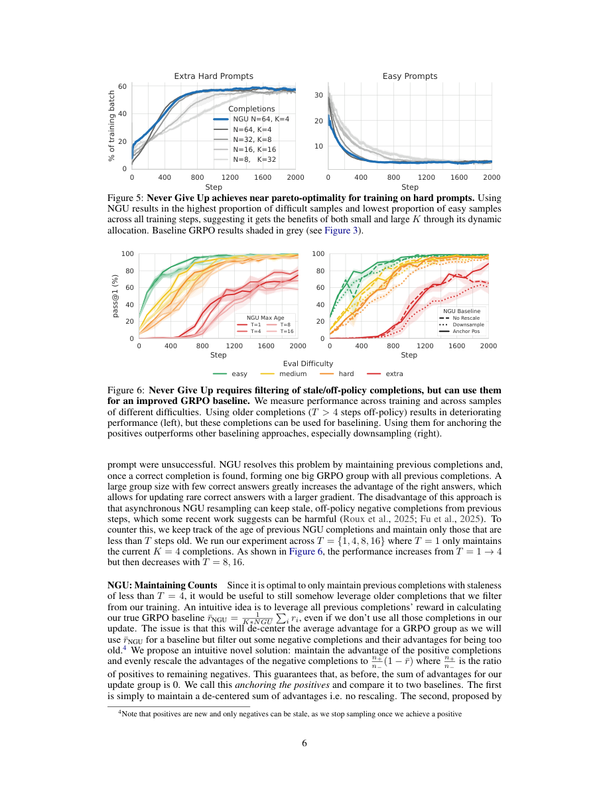

#1
★ 8/10
Learning to Solve Hard Problems in RL for LLMs by Never Giving Up
Learning to Solve Hard Problems in RL for LLMs by Never Giving Up

图 Figure · Page 6 of paper
🎯 （AI 中文深度分析暂不可用：Anthropic API 额度不足。英文栏为论文原文摘要，下方链接均可正常访问。）
We demonstrate that training LLMs with RL does not improve performance equally across a dataset
| 维度 | 中文 | English |
|---|---|---|
| ❓ 待解决 的问题 |
（AI 中文深度分析暂不可用：Anthropic API 额度不足。英文栏为论文原文摘要，下方链接均可正常访问。） | We demonstrate that training LLMs with RL does not improve performance equally across a dataset. RL shows large improvements on easy problems that an LLM is already good at solving, but small improvements on hard problems. We call this the Matthew Effect in RL for LLMs, after the phenomenon of cumulative advantage from economics and network science summarized as "the rich get richer". The naive explanation is that hard problems require more compute to find a solution. We argue that modern RL methods are exacerbating the issue by wasting too much compute on easy problems and instead should dynamically reallocate how they use compute. We introduce Never Give Up (NGU), a simple adaptive sampling method that keeps generating samples for a problem until one is correct. By leveraging asynchronous RL, this naturally uses fewer samples to filter out easy problems and allocates more compute to solving harder problems. We investigate the design choices that affect NGU, such as off-policy robustness, and develop a set of best practices. On the math benchmark Deepscaler, NGU improves performance per compute, especially on harder problems. On a recent coding task, Manufactoria, standard GRPO with a per-test reward fails to fully solve problems that have a range of easy and difficult tests. NGU iteratively improves, solving harder and harder tests, until it learns to fully solve coding problems. |
| 💡 解决 的亮点 |
（AI 中文深度分析暂不可用：Anthropic API 额度不足。英文栏为论文原文摘要，下方链接均可正常访问。） | See the paper’s original abstract in the "Problem / 背景" row above. |
| 🧪 实验 内容 |
（AI 中文深度分析暂不可用：Anthropic API 额度不足。英文栏为论文原文摘要，下方链接均可正常访问。） | See the paper’s original abstract in the "Problem / 背景" row above. |
| 📊 实验 结果 |
（AI 中文深度分析暂不可用：Anthropic API 额度不足。英文栏为论文原文摘要，下方链接均可正常访问。） | See the paper’s original abstract in the "Problem / 背景" row above. |
| 🏁 结论 | （AI 中文深度分析暂不可用：Anthropic API 额度不足。英文栏为论文原文摘要，下方链接均可正常访问。） | See the paper’s original abstract in the "Problem / 背景" row above. |
| 🔗 论文 链接 |
arXiv: 2609.13443v1 · 📥 PDF | |
⚙️ Method · 方法详解
（AI 中文深度分析暂不可用：Anthropic API 额度不足。英文栏为论文原文摘要，下方链接均可正常访问。）
See the paper’s original abstract in the "Problem / 背景" row above.
🌟 Why It Matters · 为什么重要
（AI 中文深度分析暂不可用：Anthropic API 额度不足。英文栏为论文原文摘要，下方链接均可正常访问。）
See the paper’s original abstract in the "Problem / 背景" row above.